01 Diagnóstico
- Levantamiento inicial
- Revisión documental
- Revisión de cumplimiento
- Identificación de brechas
- Priorización
Prevención de riesgos · DS 44 · Cultura preventiva
SafetyCoach ayuda a empresas a diagnosticar, implementar y mantener su gestión de seguridad, salud y bienestar laboral: desde el DS 44 hasta los protocolos MINSAL y la transformación de la cultura preventiva.
«La seguridad no se implementa solamente con documentos. Se construye en las personas, en los líderes y en la cultura de la organización.»
— Hans, SafetyCoachDónde estás hoy y qué te expone.
Construimos el sistema contigo, no para el archivador.
Visitas, seguimiento y apoyo durante el año.
Indicadores, aprendizaje y cultura que se sostiene.
Empieza por donde más te duele
Servicio principal
El DS 44 ordena la gestión preventiva de las empresas en Chile: política, organización, matriz de riesgos, programa de trabajo, información a los trabajadores, emergencias y seguimiento. La pregunta no es si tienes los documentos, sino si tu sistema funciona y puedes demostrarlo. Te acompaño de principio a fin.
La implementación se realiza considerando la legislación y normativa chilena vigente. Los requisitos específicos se verifican según tipo de empresa, actividad y número de trabajadores.
Nivel 1
Para conocer tus brechas y saber qué resolver primero.
Nivel 2
Para construir y poner en marcha el sistema con tu equipo.
Nivel 3 · Recomendado
Para mantenerlo, medirlo y mejorarlo durante todo el año.
Sin necesidad de contratar de inmediato un equipo interno completo. Un plan mensual ajustado al tamaño, rubro y número de centros de trabajo de tu empresa.
Pymes
Tu prevención externa: alguien con experiencia que conoce tu operación, te dice qué es urgente y lo implementa contigo.
Empresas contratistas
No basta con cumplir la ley. También debes demostrar que tu sistema funciona frente a tu mandante.
Fiscalizaciones y trámites
Un accidente grave, una visita de la Inspección del Trabajo o de la SEREMI de Salud, una denuncia por Ley Karin. Son momentos de presión. Te acompaño a responder con orden, corregir lo que corresponde y dejar evidencia de que tu empresa gestiona.
Fiscalizaciones y trámites de empresas que han sufrido accidentes del trabajo graves: antecedentes, medidas correctivas y seguimiento de lo observado.
Incorporación de pymes al PAC para corregir infracciones con un plan concreto, en lugar de solo pagar la multa.
Fiscalizaciones y verificaciones; trámites de nuevas autorizaciones sanitarias y actualizaciones, y calificación industrial y ambiental.
Gestión de situaciones derivadas de denuncias: protocolo de prevención, medidas de resguardo, investigación y seguimiento.
Experiencia en gestiones ante:
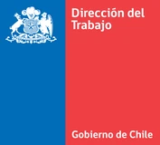
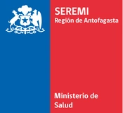
SafetyCoach es una asesoría independiente y no tiene vínculo con estos organismos. Los logos identifican las instituciones ante las cuales he realizado gestiones para mis clientes.
Protocolos y gestión preventiva
Cada servicio puede contratarse por separado o integrarse a un plan de acompañamiento.
Los requisitos de cada protocolo deben verificarse según actividad, exposición y número de trabajadores.
SafetyCoach Digital
Tú conoces tu operación. Tus supervisores y tu equipo saben dónde está el riesgo. Yo aporto más de 20 años en prevención. Sumamos la inteligencia artificial para cocrear contigo herramientas simples, que tu gente usa de verdad y que dejan evidencia de tu gestión, todos los días.
No se trata de tener más tecnología. Se trata de que la tecnología trabaje para cuidar a tu equipo.
Desde el celular, con fotos, fecha, hora y geolocalización. Sin papeles que se pierden.
Cápsulas breves e interactivas, con evaluación y firma del trabajador. Asistencia y aprendizaje registrados.
El trabajador escanea, revisa el equipo y queda autorizado. Si no inspecciona, no opera.
MIPER, procedimientos y señalética en formato visual, fácil de entender en terreno.
Cada registro con responsable, lugar y momento. Listo para auditorías, mandantes y fiscalizaciones.
Hallazgos, acciones cerradas y avance del programa, en reportes claros para la gerencia.
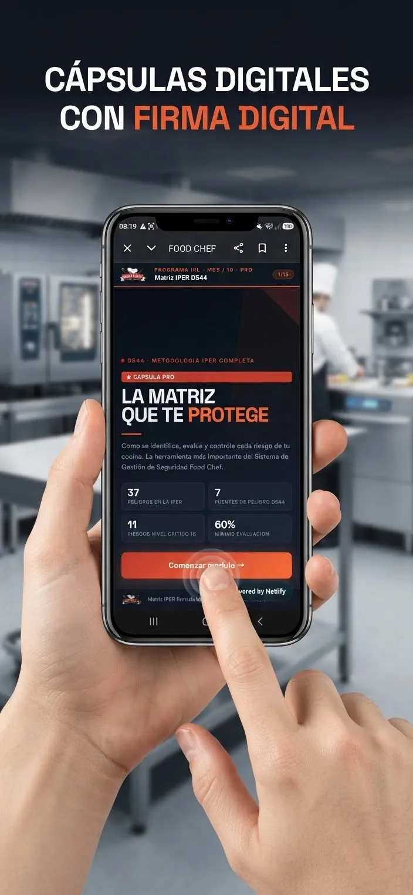
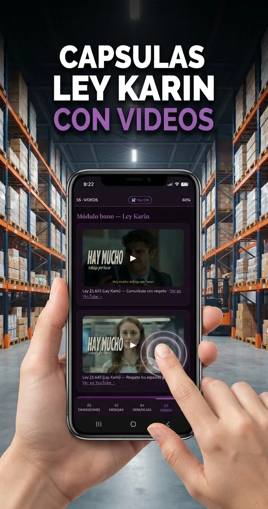
Como anillo al dedo: lo creamos contigo, lo ajustamos en terreno y lo dejamos funcionando.
Quiero ver cómo funcionaCoaching de seguridad
Una política de seguridad escrita por un consultor no compromete a nadie. Una construida por la gerencia en una conversación honesta, sí. Trabajo con líderes para que ellos definan el rumbo y lo sostengan.
Análisis crítico de resultados, accidentabilidad y matriz de riesgos. La gerencia redefine su compromiso y lo convierte en la política de seguridad.
Jefaturas y supervisores calibran metas medibles, definen indicadores y los recursos que necesitan. El ejecutivo pasa a ser coach del supervisor.
Los equipos analizan su operación y proponen formas de trabajo más seguras. Las mejores ideas se presentan, se reconocen y se implementan.
Acompañamiento personal a líderes clave cuando el cambio requiere trabajar hábitos, comunicación o estilo de liderazgo.
Elige el que más se parece a tu realidad.
Se actúa después del accidente o de la fiscalización.
Siguiente paso: Diagnóstico y prioridades claras: qué hacer primero para dejar de apagar incendios.
Riesgos psicosociales
Gestionar el riesgo psicosocial no es aplicar una encuesta y archivar los resultados. Es entender qué está pasando en tus equipos y hacer cambios que la gente note.
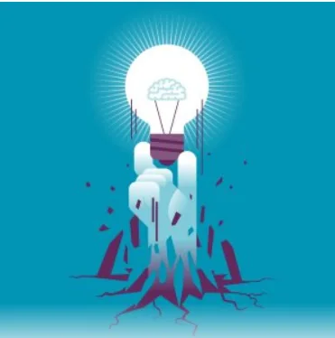
SafetyCoach Bienestar
Programas prácticos para equipos y líderes: herramientas concretas de regulación emocional, autocuidado y liderazgo que se integran a la rutina de trabajo y complementan la gestión de riesgos psicosociales.
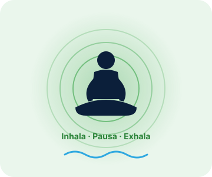
Pausas conscientes y respiración para bajar la tensión en turnos exigentes.
Comunicación, gestión emocional y presencia para jefaturas que lideran personas bajo presión.
Hábitos saludables y herramientas simples que el equipo usa todos los días.
Del “cuídate” como consigna al autocuidado como conducta compartida.
Conciencia corporal y conexión mente-cuerpo para prevenir el desgaste.
Los programas de bienestar son instancias formativas y de desarrollo organizacional. No constituyen terapia clínica ni reemplazan la atención de salud mental profesional.
Llevar un programa a mi empresa¿Por qué SafetyCoach?
Del cumplimiento en papel a una cultura que se sostiene.
Conocimiento técnico de prevención y seguridad, aplicado a tu operación real.
Acompañamiento de personas, líderes y equipos para que asuman el proceso como propio.
Transformación de comportamientos y hábitos, no solo de registros.
Implementación, seguimiento e indicadores para saber qué está funcionando.
Método SafetyCoach
Mi historia
No llegué a la prevención solamente desde los libros. Trabajé como responsable de seguridad en construcción, minería e industria química, junto a empresas nacionales e internacionales; entre ellas, cerca de 10 años con Aislapol S.A., en su momento unidad de negocio de BASF. He investigado accidentes, he estado en emergencias y he visto de cerca lo que pasa cuando un procedimiento existe en papel pero nadie lo cree.
También trabajé desde una mutualidad, atendiendo a empresas y conversando con gerencias. Ahí confirmé algo: las organizaciones que mejoran no son las que tienen más carpetas, sino las que tienen líderes comprometidos y trabajadores que entienden por qué se cuidan.
Por eso sumé el coaching y las herramientas de bienestar a mi formación técnica. SafetyCoach nace de esa mezcla: el criterio de un prevencionista con experiencia y la capacidad de acompañar a las personas en el cambio.
Experiencia
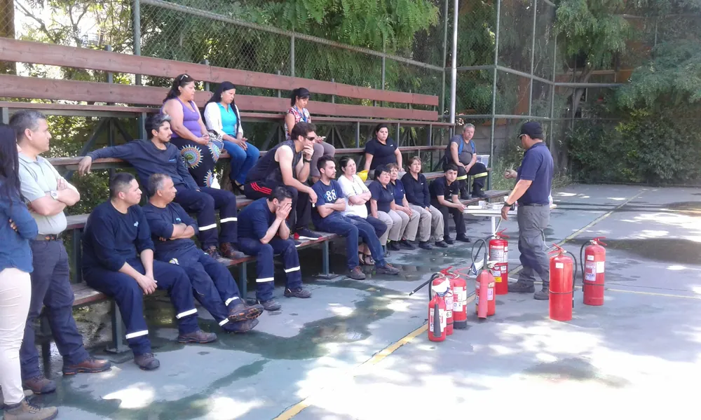
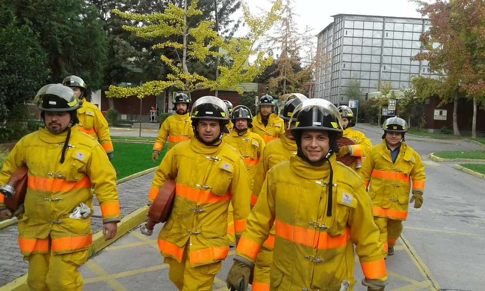
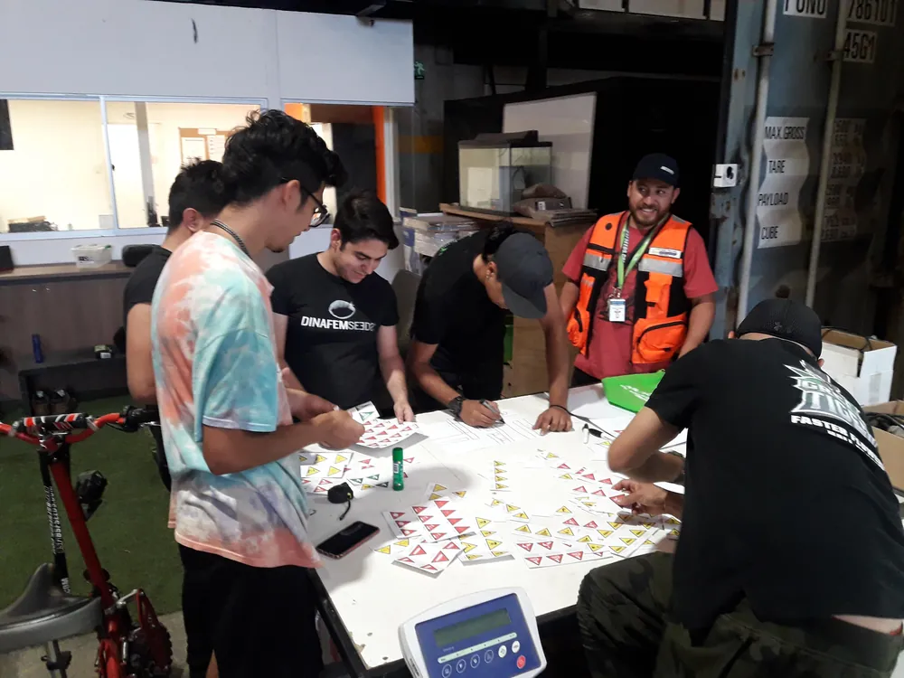
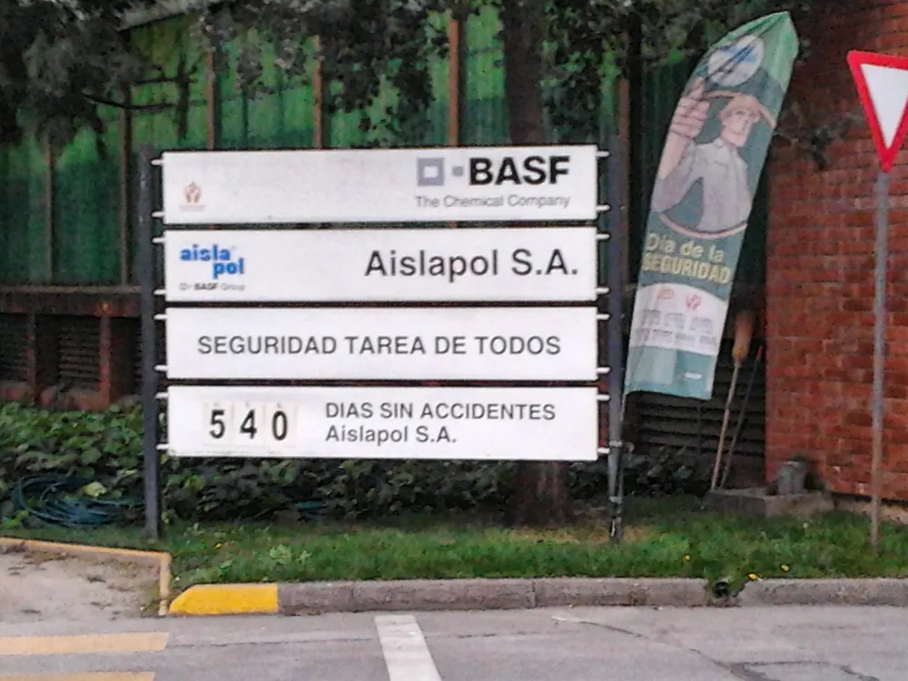
[TESTIMONIO REAL]Nombre, cargo, empresa
[TESTIMONIO REAL]Nombre, cargo, empresa
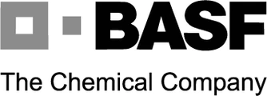
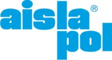
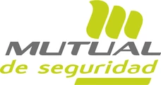
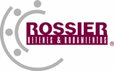
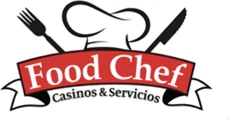
Biblioteca SafetyCoach
Guías y checklists prácticos. Déjame tus datos y te los envío apenas estén disponibles.
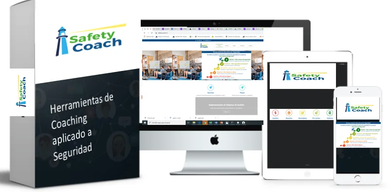
Próximamente: artículos, videos, análisis normativos y novedades DS 44 en la sección Academia.
No. Puedo funcionar como tu área externa de prevención. Si ya tienes prevencionista, lo apoyo para que deje de estar sobrecargado y pueda enfocarse en lo importante.
Una visita de levantamiento, revisión de documentos y evidencias, y un informe con las brechas priorizadas y una hoja de ruta. Es la base para decidir si implementas por tu cuenta o con acompañamiento.
Sí. Atiendo empresas en distintas regiones de Chile, combinando visitas en terreno y reuniones online según lo que necesite cada etapa.
Depende del tamaño de la empresa, el número de centros de trabajo y el nivel de apoyo. Después de una primera conversación te propongo un plan concreto con alcance y valor cerrados.
No. Son instancias formativas y prácticas para equipos y líderes, vinculadas al bienestar laboral y la gestión psicosocial. No reemplazan la atención de salud mental profesional.
Revisamos lo observado, corregimos y ordenamos las evidencias, y armamos un plan para que no se repita. Mientras antes se actúe, más opciones hay.
Hablemos de tu empresa
Respondo personalmente. La primera conversación es para entender tu situación, sin compromiso.